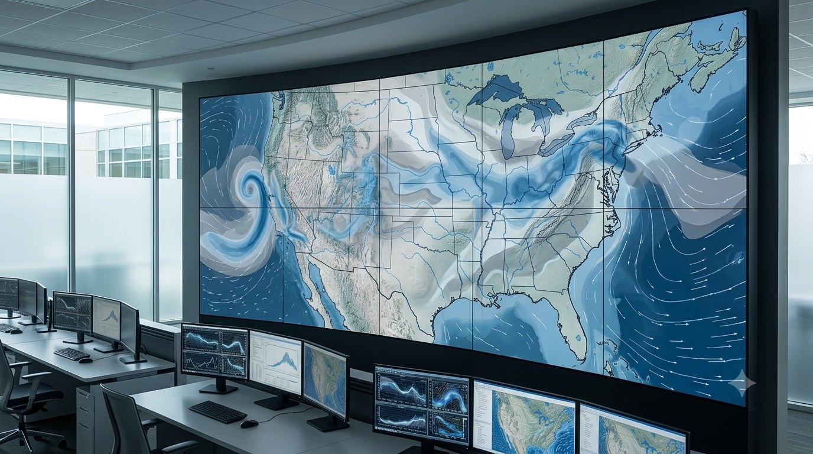
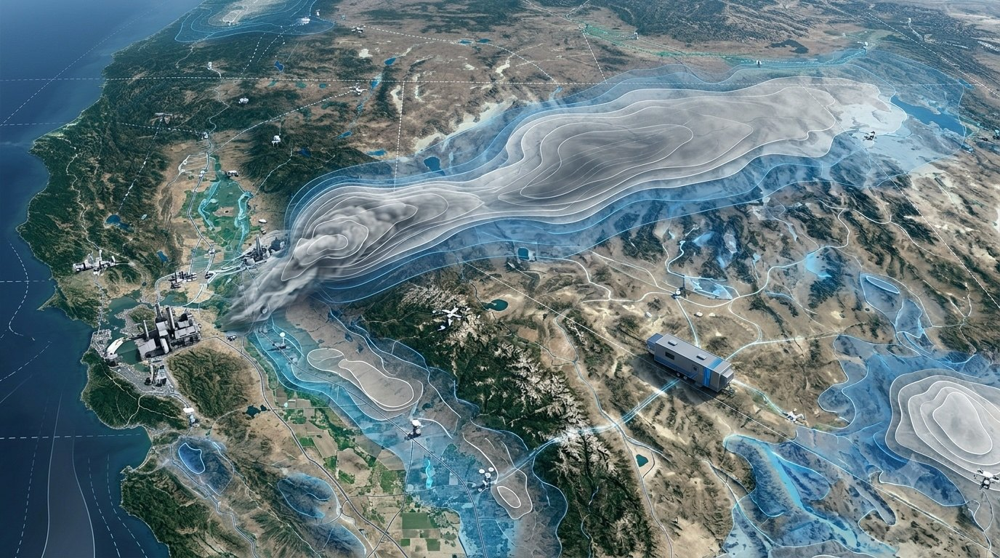
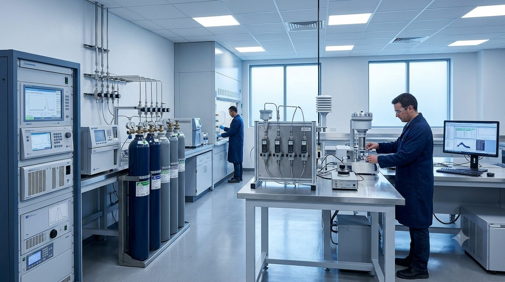
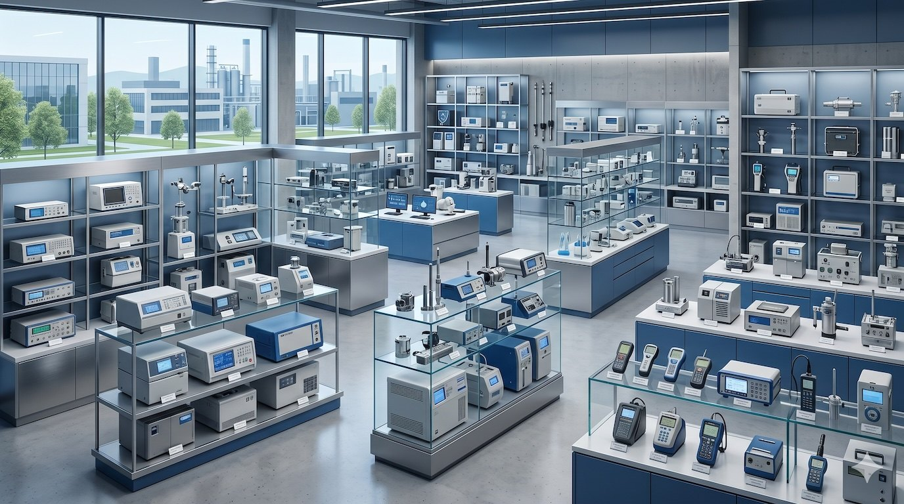
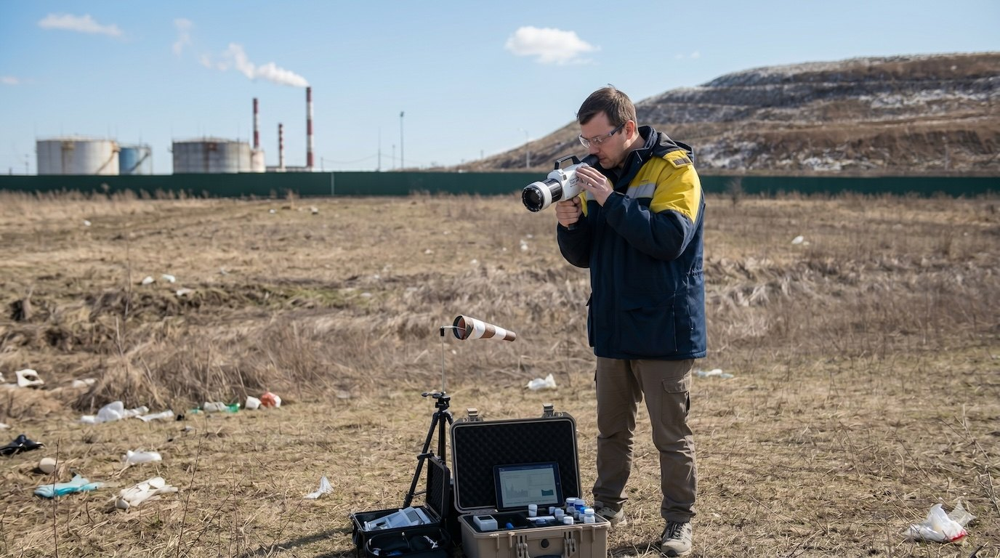

Разработка методик расчета выбросов
Разработка методик расчета выбросов
Услуги АО «НИИ Атмосфера»
Научные исследования и моделирование
Научное сопровождение, расчетные методики, моделирование загрязнения атмосферного воздуха и оценка переноса загрязняющих веществ.
Разработка методик расчета выбросов
 Сводные расчеты загрязнения атмосферного воздуха городов и промышленных узлов
Сводные расчеты загрязнения атмосферного воздуха городов и промышленных узлов

Оценка влияния предприятий на окружающую среду в контексте дальнего переноса загрязняющих веществ
Оценка трансграничного / межрегионального загрязнения территорий субъектов РФ Научно-исследовательские работы, научно-технический совет
Научно-исследовательские работы, научно-технический совет
Экологическое проектирование и разрешительная документация
Подготовка проектной, разрешительной и нормативной документации для промышленных предприятий.
Лабораторные, измерительные услуги и исследования запахов
Измерения, лабораторные исследования, методики, исследования промышленных запахов, ольфактометрические исследования и автоматизированный контроль выбросов.

Омский лабораторный измерительный центр
Перечень методик и технические средства измерения концентраций загрязняющих веществ в промышленных выбросах
Исследование промышленных запахов и ольфактометрическая лабораторияКлиматические проекты и парниковые газы
Оценка, инвентаризация, валидация и верификация выбросов парниковых газов.
Экспертная деятельность
Экспертная поддержка предприятий, разработка нормативных документов и проведение экологического аудита.

Образовательная и издательская деятельность
Повышение квалификации специалистов, проведение обучающих мероприятий и распространение научно-методической литературы.